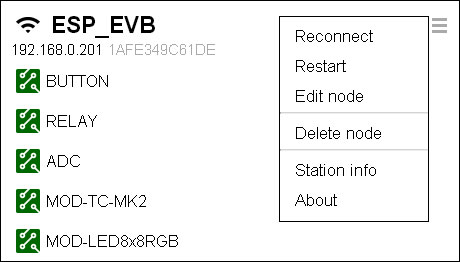

Back to OlimexIoT Help
Node management is accessible via node menu.
Drop node's connection i.e. node is forced to re-establish connection to the IoT Server.
The node is forced to restart and re-connect to the IoT Server.
Change the name of the node.
If the node you are deleting is connected to the IoT Server its firmware will be reset to factory default. This will delete all credentials from the node and will prevent it to re-connect to the server at later stage.
If the node is not connected all credentials will remain stored into the node's firmware. This will cause the node to try to reconnect to the server when is back on. If your policy is to auto accept new nodes - deleted node will re-appear in your main screen.

Basic WiFi station and network information.
IoT node's system information.
Continue with Node monitoring
Back to OlimexIoT Help